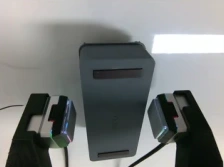
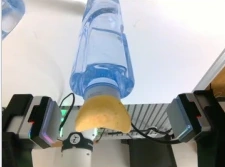
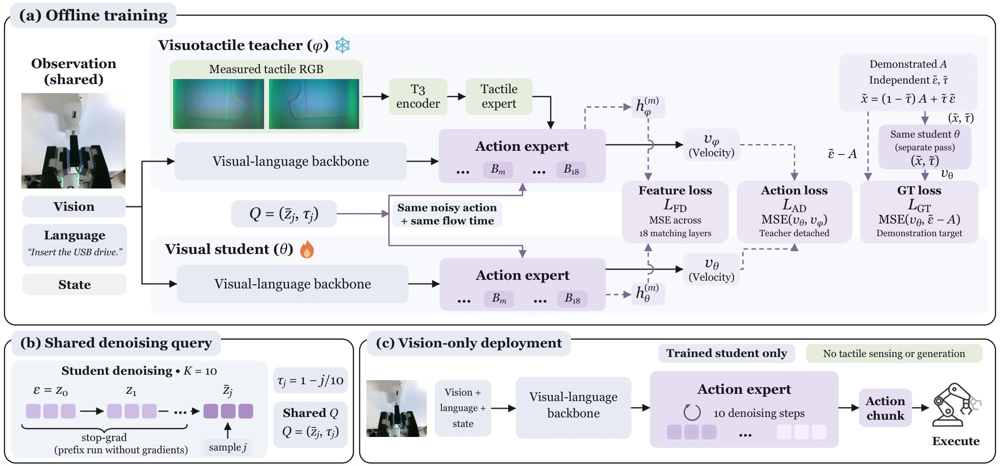
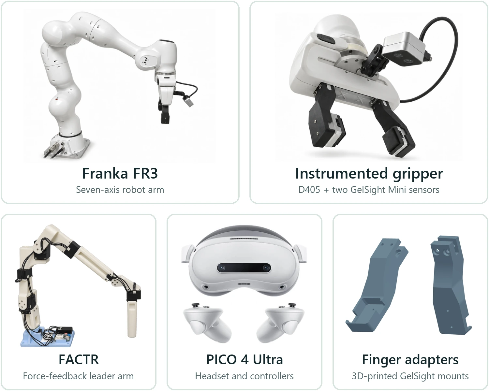
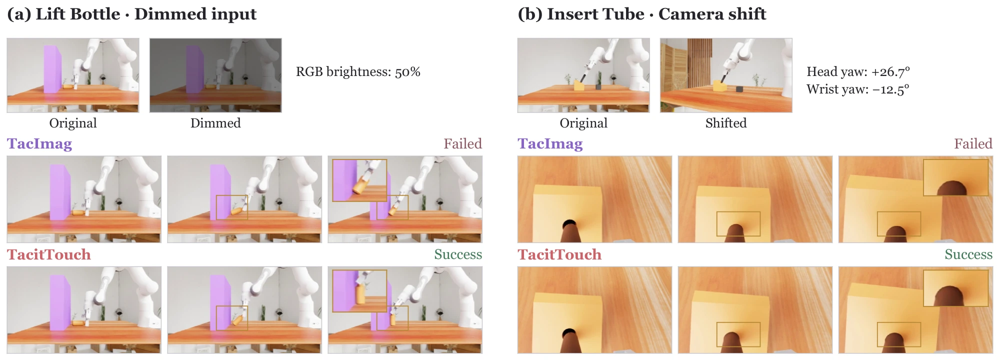

Ball Sorting

Rollout video pendingDemonstration frame
Sort visually similar balls by surface texture.
Tactile supervision trains a vision-only policy to carry out contact-rich manipulation.
1 Tsinghua University 2 Amap, Alibaba Group
* Equal contribution. † Corresponding author.
Watch the rolloutsMean success-rate gain
over vision-only control
TacitTouch policies run on Franka across four contact-rich tasks.
Sort visually similar balls by surface texture.

Grasp, align and insert the plug into the port.

Pick up the eraser and clear the marked area.

Move the chip between bottle mouths and release it intact.
These wrist images and measured GelSight readings were recorded during demonstrations.


A visuotactile teacher supervises action predictions and representations during training. At deployment, the student uses RGB, instructions and proprioception.


Success rates on simulated and real-world manipulation tasks.

Selected matched TacImag and TacitTouch rollouts under altered lighting and camera viewpoints.

@misc{yang2026tacittouch,
title = {Distilling Touch into Vision-Only Policies for Contact-Rich Manipulation},
author = {Yang, Chen and Wang, Linhao and Shi, Linzhe and Zhang, Guohui and
Wu, Changjie and Zhang, Hang and Li, Haoyu and Xu, Mu and
Fan, Jiansheng and Wang, Chen},
year = {2026},
url = {https://pier-lab.github.io/tacittouch/}
}